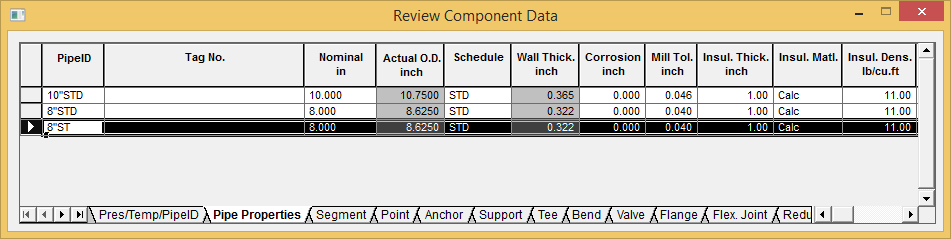
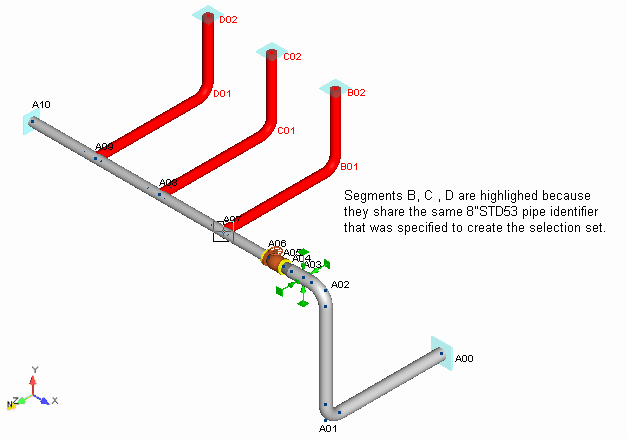
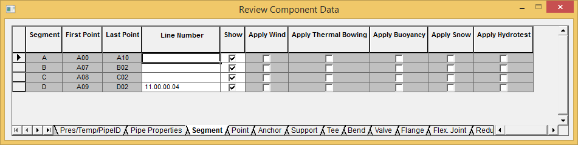

Selecting a Range by Pipe Identifier (Input Grids)
In the previous chapter you learned several techniques for selecting a range by segment, or by using the [Shift] and [Ctrl] keys to manually select a range of components. In this section you'll learn how to create a selection set of components which share user-defined pipe properties.
1. Select the row for Pipe Identifier 8"ST {200STD53} in the grid as shown below.

| Note: |
The Input Grids/Pipe Properties tab can used to easily create a selection for a single pipe identifier. |

| Hint: |
Pipes can also be selected by segment or line number using the segment grid as shown below. |
